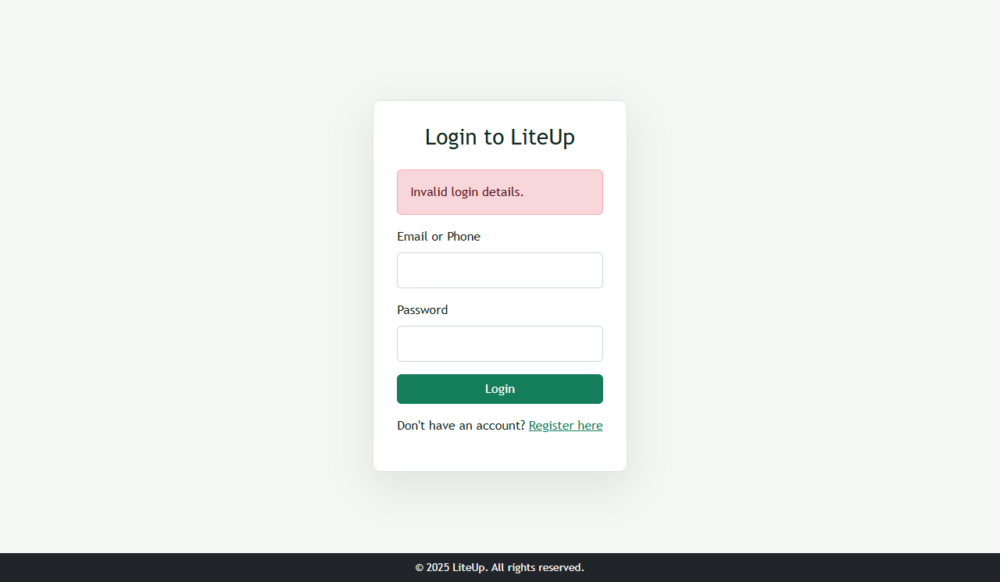

LiteUp · Application Security
Seven common web security issues, explained in plain language, with safe local checks and the expected LiteUp response.
A guide for the audience
Each topic answers three questions: what the weakness means, how to check LiteUp safely, and what the response would look like if the protection were missing.
Topic 01 of 07 · File uploads
A file upload vulnerability occurs when an application fails to safely validate, store, or serve user-supplied files, such as by trusting the filename, type, contents, or size.
A harmful or oversized file could be stored or shown to users. Server execution depends on storage and server configuration.
Profile image code checks size, actual MIME type, image content, and generates a random filename. Funding proofs have separate type and size checks.
public/profile.php and public/fund_wallet.php. Source review found validation; this presentation did not submit a new upload.
demo; rename it demo.jpg.The file is harmless text, not executable code. Renaming tests whether the server checks the file's contents.
The site may accept the text as an image and report success. Risky file types could create further server or user exposure.
Reject with: “Please upload a JPG, PNG, GIF, or WebP image.” This is the source-based expected result, not a new runtime capture.
Topic 02 of 07 · Local / remote file inclusion
File inclusion is a vulnerability in which untrusted request data controls a file path passed to a server-side include operation, potentially loading an unintended local or remote file.
Private content might be exposed, or unintended code could run, depending on what file is loaded and server settings.
Reviewed PHP pages use fixed application include paths. No request-controlled include path was found.
Review include and require in public/, admin/, and includes/.
Get-ChildItem .\public,.\admin,.\includes -Recurse -Filter *.php | Select-String -Pattern 'include\s+.*\$_|require\s+.*\$_'
Inspect any match; a search match alone does not prove a flaw. Do not try to read system files.
If visitor input controls the loaded path, the page could include a file the developer did not intend.
No user-controlled include path was found. Because no such route exists, there is no safe file-inclusion payload to run on LiteUp.
Topic 03 of 07 · Cross-Origin Resource Sharing
CORS is a browser-enforced policy that lets a server specify which origins may read its responses. A misconfiguration grants that access too broadly or to an untrusted origin.
An overly broad policy can let an untrusted site's script read eligible LiteUp responses in a visitor's browser.
The reviewed application has no permissive CORS header; the local login response had no Access-Control-Allow-Origin.
Check response headers from the local login page. This read-only request does not sign in or change data.
curl.exe -i -H "Origin: https://attacker.invalid" "http://localhost/liteup_app/public/login.php"
Access-Control-Allow-Origin in the headers.A response granting * or the untrusted origin could allow cross-site scripts to read eligible responses.
No Access-Control-Allow-Origin header. No cross-site read permission is granted by the reviewed app.
Topic 04 of 07 · Password guessing
A brute-force attack repeatedly submits password guesses against an account. Weak or missing rate limits make repeated attempts easier to continue.
Unlimited guesses give an attacker more chances to take over an account.
Atomic rate limiting admits five attempts and blocks later attempts during a 15-minute window for the same source and identity.
public/login.php, includes/security.php, and the recorded test_rate_limiter.php result.
Use no real account. Wait 15 minutes or use a new dummy identity before repeating.
Every guess continues to reach password checking. Persistent guessing increases account-takeover risk.
Attempts 1–5 are admitted; attempt 6 is limited with “Invalid login details. Please try again later.”
Topic 05 of 07 · Operating-system commands
Command injection occurs when untrusted input is incorporated into an operating-system command and changes the command or arguments executed by the server.
The server could run an unintended command, expose data, or alter files within the web-server account's access.
No PHP shell-execution API was found in the reviewed application files.
Search PHP source, then trace any match to see whether request input reaches it. A match alone is not proof.
Get-ChildItem .\public,.\admin,.\includes -Recurse -Filter *.php | Select-String -Pattern 'shell_exec|exec\s*\(|system\s*\(|passthru|proc_open|popen'
Do not submit command strings to the website. This app has no command feature to test.
If untrusted text reaches a shell unsafely, it may cause an unauthorized server action.
No shell command sink was found. There is no safe payload to run against the current app.
Topic 06 of 07 · Database query injection
SQL injection is a flaw where untrusted input is combined with a SQL query as executable syntax instead of being handled only as data.
A login could be bypassed, or database records could be read or changed.
The login uses prepared statements. The recorded local test returned an ordinary invalid-login message and created no session.
public/login.php binds login identity values separately from SQL.
' OR 1=1 -- ; use any wrong password.Stop if a sign-in succeeds or a database error appears. This uses one rate-limit attempt.
Raw input may alter SQL logic. A sign-in bypass or database error could reveal an unsafe query.
“Invalid login details.” No session created. Prepared parameters keep the input as data.

Topic 07 of 07 · Cross-Site Request Forgery
CSRF is an attack that makes an authenticated user's browser send an unintended state-changing request, relying on the browser's existing session credentials.
A website could cause an unwanted state-changing action using the visitor's active session.
State-changing forms use session tokens. Logout requires POST and checks the token.
public/logout.php, includes/security.php, and the captured local response.
/public/logout.php directly in the same browser; confirm the session remains active.curl.exe -i -X POST "http://localhost/liteup_app/public/logout.php"
A request without the user's intent or a valid token may perform the action. In the old logout pattern, a GET could destroy the session.
GET returns 405; POST without a valid token returns 403. The normal logout form carries the token.
Summary · What LiteUp shows
References
Project-specific claims refer to the LiteUp source or local verification records. External guidance supports the plain-language definitions and prevention concepts.